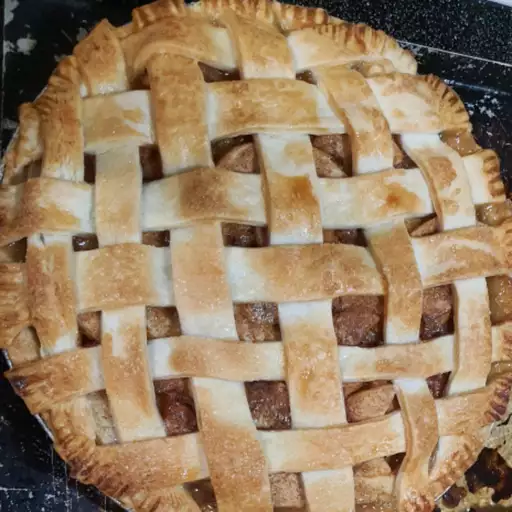

Home
Easy Apple Pie Recipe

Description
This easy apple pie was my mother's recipe. I make this simple recipe for homemade pie all the time; I love it. I often add a dash of nutmeg, so you can put that in if you wish.
Ingredients
- 1 (14.1 ounce) package pastry for a 9-inch double-crust pie.
- 3/4 cup white sugar, or more to taste.
- 1 teaspoon ground cinnamon
- 6 cups thinly sliced apples
- 1 tablespoon butter
Cooking Steps
- Step 1: Preheat the oven to 450 degrees F (230 degrees C).
- Step 2: Line a 9-inch pie dish with one pastry crust; set second one aside.
- Step 3: Combine 3/4 cup sugar and cinnamon in a small bowl. Add more sugar if your apples are tart.
- Step 4: Layer apple slices in the prepared pie dish, sprinkling each layer with cinnamon-sugar mixture.
- Step 5: Dot top layer with small pieces of butter. Cover with top crust.
- Step 6: Bake pie on the lowest rack of the preheated oven for 10 minutes. Reduce oven temperature to 350 degrees F (175 degrees C) and continue baking until golden brown and filling bubbles, 30 to 35 minutes more.
- Step 7: Serve warm or cold.